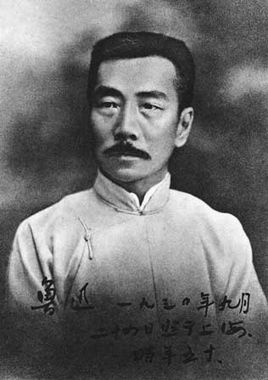

文章一级标题
文章二级标题
文章作者 文章发表时间有一回，我就听得一间空屋里有着这种“数钱”的声音，推门进去，一条蛇伏在横梁上，看地上，躺着一匹隐鼠， 口角流血，但两胁还是一起一落的。取来给躺在一个纸盒子里，大半天，竟醒过来了，渐渐地能够饮食，行走，到第二日， 似乎就复了原，但是不逃走。放在地上，也时时跑到人面前来，而且缘腿而上，一直爬到膝髁。这里有一个链接到http://ife.baidu.com给放在饭桌上， 便检吃些菜渣，舐舐碗沿；放在我的书桌上，则从容地游行，看见砚台便舐吃了研着的墨汁。这使我非常惊喜了。 我听父亲说过的，中国有一种墨猴，只有拇指一般大，全身的毛是漆黑而且发亮的。
它睡在笔筒里，一听到磨墨，便跳出来，等着，等到人写完字，套上笔，这里有一个链接到http://ife.baidu.com就舐尽了砚上的余墨，仍旧跳进笔筒里去了。我就极愿意有这样的一个墨猴， 可是得不到；问那里有，那里买的呢，谁也不知道。“慰情聊胜无”“慰情聊胜无”：出自晋陶渊明诗《和刘柴桑》： “弱女虽非男，慰情良胜无。”，这隐鼠总可以算是我的墨猴了罢，虽然它舐吃墨汁，并不一定肯等到我写完字。